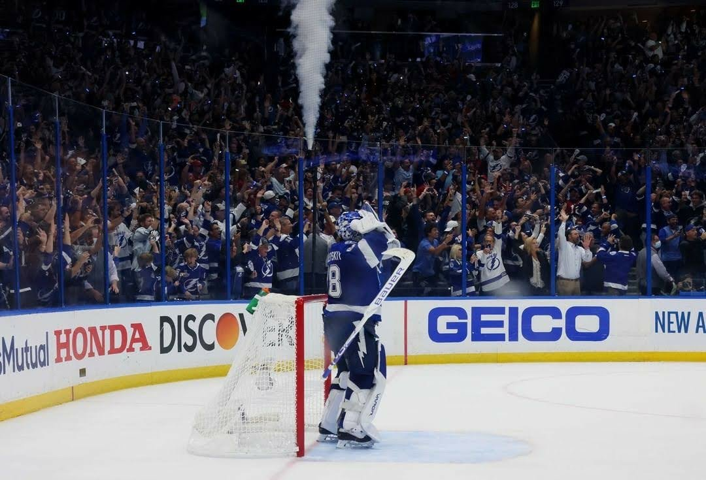
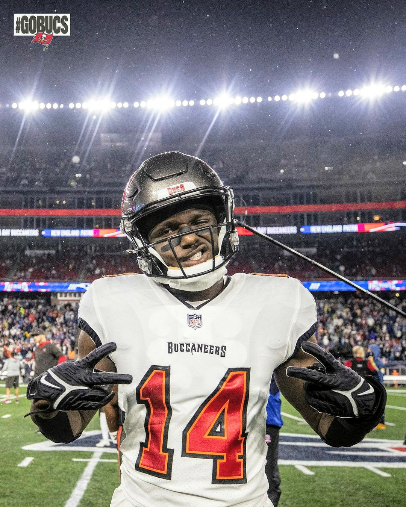

TampaSportsTV™
TampaSportsTV™

About TampaSportsTV
TampaSportsTV is a channel I decided to create because of my love for the city of Tampa so I decided since I am beginning a Digital Media career, I wanted to make videos of the teams I love in sports. Which are the Tampa Bay Lightning and the Tampa Bay Buccaneers.
For now I have already created a account on Tiktok and will eventually work my way to Instagram, Youtube, and other social media platforms.
One of my goals in Digital Media is to take pictures and vidoes of my favorite players, Andrei Vasilevskiy of the Tampa Bay Lightning and Chris Godwin of the Tampa Bay Buccaneers.
